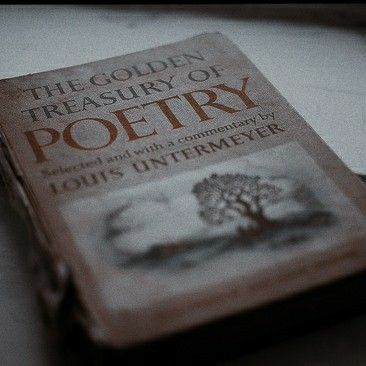

La celebración del individuo como parte
|
Ruta Temática Walt Whitman |
Me celebro y me canto a mí mismo,
y lo que yo asumo tú lo asumirás,
porque cada átomo que me pertenece
también te pertenece.

Canto el cuerpo eléctrico,
los ejércitos de aquellos que amo me rodean y me rodearán,
y yo los rodearé,
ellos no me dejarán hasta que yo vaya con ellos, responda,
y ellos me respondan.
A pie y ligero me lanzo por el camino,
sano, libre, el mundo ante mí,
el largo sendero pardo que conduce a donde yo quiera.